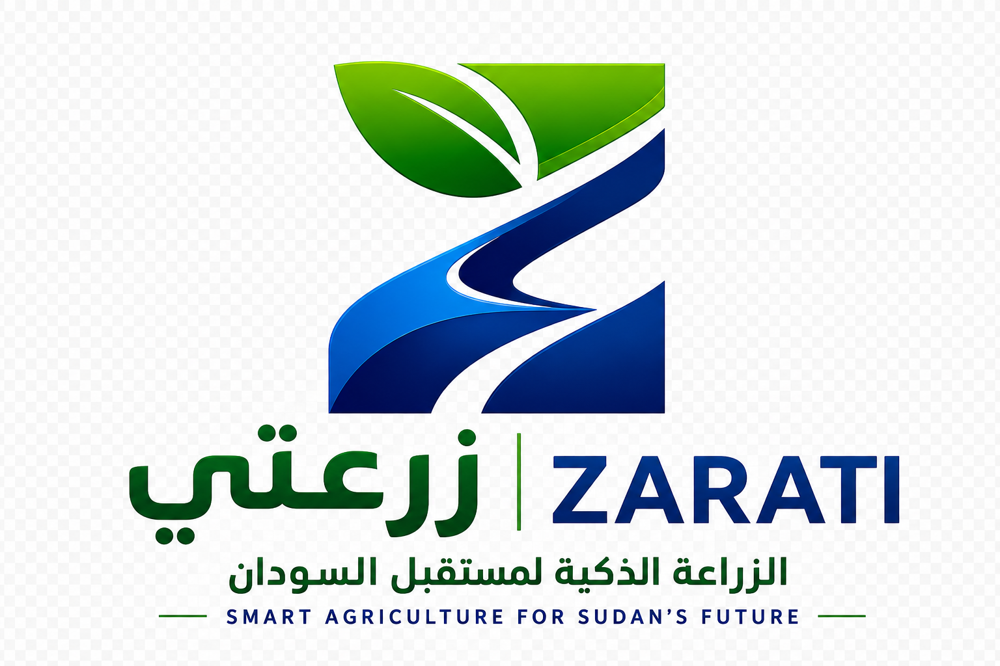

| Competitor | Sudan presence | SMS / offline | Gov dashboard | NGO M&E tools | Gender tracking | Arabic-first | Multi-stakeholder |
|---|---|---|---|---|---|---|---|
| ZARATI Sudan, 2024 |
✓ | ✓ | ✓ | ✓ | ✓ | ✓ | ✓ |
| Esoko Ghana, West Africa |
○ | ✓ | ○ | ~ | ○ | ○ | ○ |
| iCow Kenya, East Africa |
○ | ✓ | ○ | ○ | ○ | ○ | ○ |
| Twiga Foods Kenya — logistics |
○ | ○ | ○ | ○ | ○ | ○ | ○ |
| IGAD ICPALD Sudan — gov data |
~ | ○ | ~ | ○ | ○ | ~ | ○ |